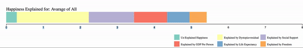

"The care of human life and happiness and not their destruction is the only legitimate object of good government." —Thomas Jefferson
The goal of Good Government should be to make it's citizens happy.
This Interactive uses data from the World Happiness Report for 2018. The World Happiness report is a survey of every country about it's own happiness. Through the survey countries are given a Happiness Score.
A Happiness Score reflects the level of happiness of individual citizens in a given country.
This Interactive allows a user to explore happines through country statistics for the year 2017 (2016 for Democratic Quality). By understanding the statistics one will ba able to explain how differnt statistics
can and do effect a citiziens happiness. Through understanding the effects of government on an indivduals happiness one develops a greater understanding of what is Good Government.
How to use this Interactive
Explore the distribution of happiness by clicking, selecting, and brushing countries.
Each Country is placed horizontaly. Scaled by it's Happiness Score.
Change the Bubble Chart inputs to compare statistics and see the data change.

As you click and select countries this stacked bar displays how happiness in the selected country is calculated.